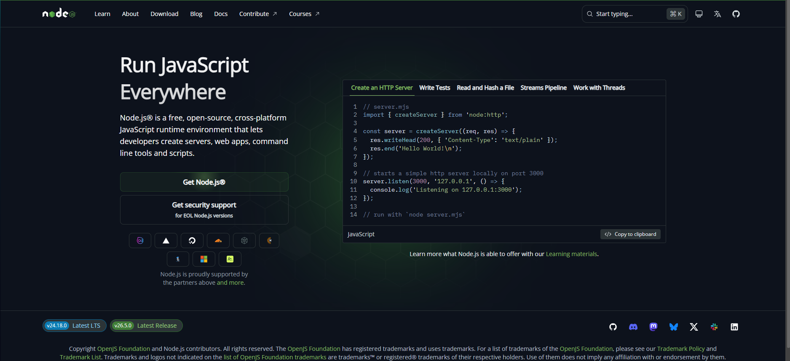
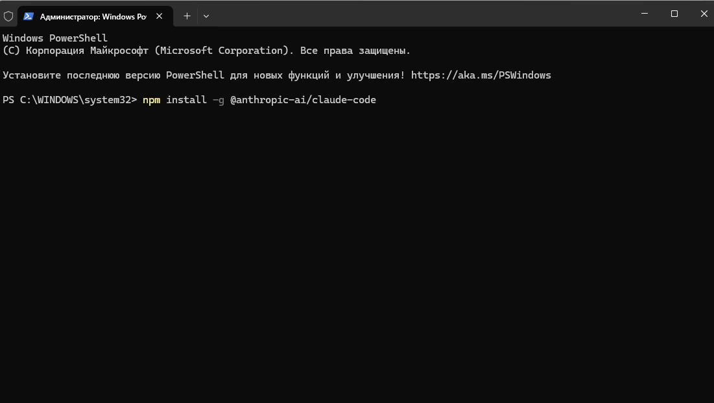

Обычный чат в браузере (claude.ai). Отвечает текстом. В твои файлы залезть не может.
Тот же Claude, но работает у тебя на компьютере, в твоей папке. Сам создаёт файлы, всё настраивает.
Это «движок», на котором работает Claude Code. Открой nodejs.org и нажми зелёную кнопку «Get Node.js». Скачается установщик — открой его и жми «Далее» до конца.

Windows: нажми «Пуск», напиши PowerShell, открой.
Mac: нажми ⌘+пробел, напиши Терминал, открой.
Появится чёрное (или синее) окно, куда можно печатать команды. Не пугайся 🙂
Скопируй команду, вставь в терминал (правой кнопкой мыши), нажми Enter:
npm install -g @anthropic-ai/claude-code

Подожди минуту, пока установится.
Перетащи скачанную папку «Контент-автопилот» прямо в окно терминала (адрес подставится сам), поставь впереди cd и пробел, нажми Enter. Затем напиши:
claude
Нажми Enter → войди своим аккаунтом Claude. Всё! Теперь Claude работает в твоей папке.